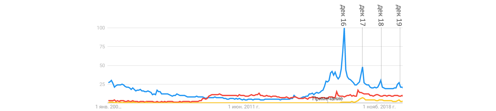

Virtual Reality
Виртуальные объекты в виртуальной среде
Additional Reality
Виртуальные объекты накладываются на реальные объекты
Mixed Reality
Виртуальные объекты "взаимодействуют" с реальными
Xperience Mode кампании Kollectin дает возможность примерить украшения перед покупкой
AR и MR активно используют онлайн-магазины, преодолевая свой главный недостаток перед оффлайн-шоппингом: теперь покупатель может примерить разные размеры одежды, украшения, посмотреть как новое кресло впишется в интерьер. Печать одежды на 3D принтере - уже не роскошь, достойная нарядов Леди Гаги (2014), а настоящая одежда из кашемира и пластика (2016-17)
Приложение IKEA позволяет увидеть, как предметы мебели смотрятся в вашем доме
Иногда изобретения новой реальности морально устаревали раньше, чем были изобретены, как, например, межгалактические корабли, которые в нулевых как раз достигли Кассиопеи с советскими школьниками на борту.
Сейчас, когда жители кремниевой долины практикуют дофаминовые информационное голодание, быстрое внедрение очков дополненной реальности кажется сомнительным, при том что их внешний вид пока значительно отличается от обычных очков. Кроме того недоверие к методам государства, хранящего личные данные миллионов пользователей, только растет.
Да и никто не хочет выглядеть глупо из-за нелепо торчащей из линз камеры. Ее даже пластырем не заклеить.
Загадка
На графике выше отражеено количество запросов VR, AR и MR в Google. Очевидно, что виртауальная реальность лидирует скорее из-за своего прочного места в поп-культуре и омонимичности с филосовским понятием, но смело можно говорить и о появляющемся интересе к двум другим технологиям.
Заметны макисимумы поиска "Virtual reality" в период с 25 по 30 числа декабря начиная с 2016 года. Сложно сказать, с чем связан всплеск интереса, помимо желания подарить очки виртуальной реальности своему другу на новый рождество. Эта догадка косвенно подтверждается симметричным ростом запроса "Virtual reality glasses", но, безусловно, не объясняет явление до конца.